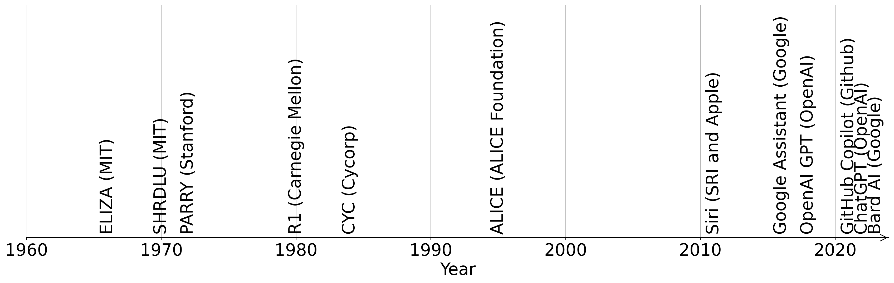

Data Talk - Large Language Models
February 7, 2023
AI assistants - you probably use them every day
- Typing on your smartphone (autocomplete)
- Search accuracy and relevance (google, bing,…)
- Language translation (deepL, google translate,…)
- Chatbots for customer service and support
- Content creation (e.g. marketing material, product descriptions, blog posts,…)
- Data analysis (extract insights from large amounts of text data)
- Coding…

more recent years
- GPT-like (Generative Pretrained Transformer) GPT-3.x or GPT-Neo, Dall-E (e.g. chatGPT, chatBCG) by OpenAI, >175 Billion parameters (GPT-4 expected to be >100x)
- BERT (Bidirectional Encoder Representations from Transformers) by Google, ~340 Million parameters
- BART/T5-like (Bidirectional Encoder Representations from Transformers, T5: Text-to-Text Transfer Transformer) by Facebook, ~400 Million parameters
- LaMDA (Language Model for Dialogue Applications) Google >135 bn parameters
- PaLM (Pretrained Autoregressive Language Model) Google > 540 bn parameters
why are parameters important? - parameters related to sophistication of the model incl. handling tasks not being trained for (GPT2 could not do language translation while GPT3 can)

Ok, probably we should consider some open questions
Copyright
Art: “If you train the AI to make Picasso-like works, or Mondrian-like works, and it makes one that is sufficiently similar, that could be a copyright infringement claim,” Mark Lemley, director of Stanford Law School’s Program in Law, Science and Technology

Open questions
Copyright
Code and Open Source: „Those duplications fail to include author attribution and licensing details, key elements of most open source software agreements, the plaintiffs said.“ from ongoing lawsuit against Copilot and OpenAI

Open questions
Ethical aspects and code of conduct
Hippocratic Oath: Do no harm, respect privacy of patients